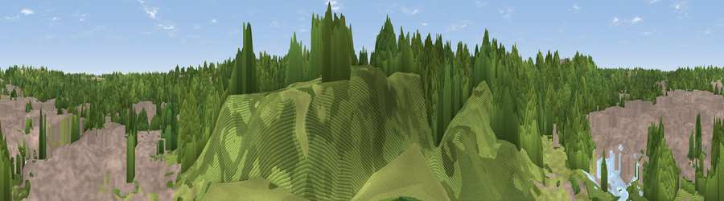

Ha' Hill
#45943 in England · top 99% of its area beats it · near Morpeth · access?Where it is
The exact computed spot (NZ 19987 85650). Click the marker for map links.
Public access: no public right of way or access land is recorded at this exact spot — it may be on private land. Computed from Natural England's CRoW access layer and OpenStreetMap rights of way — not the legal definitive map. Always verify locally.
The view, rendered

A 360° render of this exact spot computed from the terrain model, tree cover and land cover — summer colours, afternoon light, calibrated against photographs of famous viewpoints. Real trees, hedges and buildings will differ in detail.
The panorama
Grey silhouette: terrain skyline in each direction (720 bearings, Earth curvature and refraction included). Dashed green: skyline with trees (+15 m) and buildings (+8 m) as obstacles. Blue strip: how far the ground is visible on each bearing.
Where the view opens
Wedge length = distance to the farthest visible ground on that bearing (vegetation-aware). Rings at 10, 25 and 50 km.
What fills the view
53% woodland · 39% built-up · 6% grassland · 1% water ·
Angular shares of the visible panorama (visual magnitude), not map area. Landscape diversity 0.42 (0–1 Shannon).
Key numbers
More beautiful places nearby
The staircase of upgrades: each row has a higher view potential than everything closer. Driving times are estimates from straight-line distance, calibrated against real road routing — check an actual route before setting out.
| Place | Direction | Drive | Score |
|---|---|---|---|
| Viewpoint near Morpeth | WNW · 1 km | ~2 min | 17.3 |
| Colliers Hill | NE · 4 km | ~9 min | 33.0 |
| Beacon Hill | NW · 8 km | ~16 min | 57.1 |
| Viewpoint near Longhorsley | NW · 8 km | ~16 min | 57.3 |
| Viewpoint near Longhorsley | NW · 8 km | ~17 min | 61.2 |
| Northumberlandia viewpoint | SSE · 9 km | ~18 min | 68.7 |
| Viewpoint near Longframlington | NNW · 19 km | ~33 min | 72.1 |
| Viewpoint near Longframlington | NNW · 19 km | ~33 min | 73.2 |
55.16477, -1.68781 · source: osm viewpoint · position refined by local search. Computed location — check access rights before visiting.